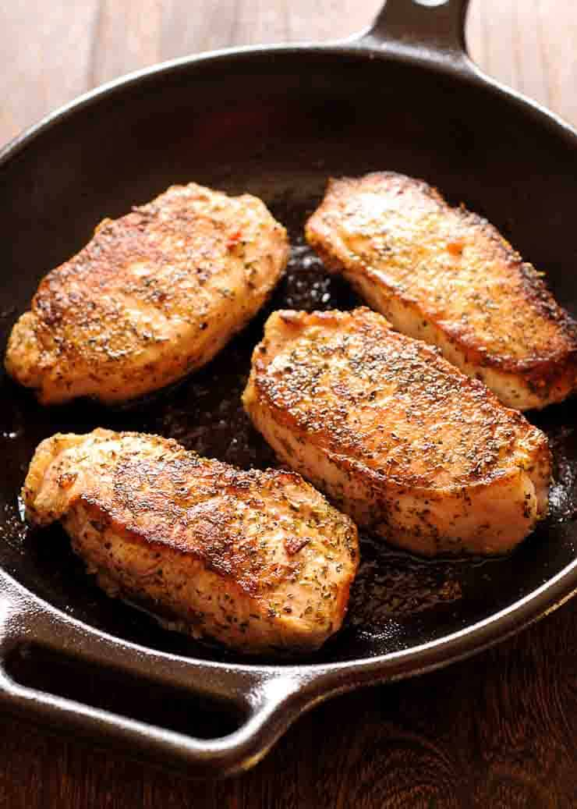

Pan Seared Pork Chops

Description
These pan-fried pork chops truly have more flavor that you will ever guess.
It’s a guaranteed way to make sure that every single bite of pork chop disappears from your plate.
This basic recipe is living proof that a few simple ingredients can create amazing results in the kitchen.
I’ll walk you through best pork chop cuts, pork chop basics and how to achieve that perfect sear.
Perfectly cooked pork chop is always cooked to a nice medium instead of the shoe leather texture
and is pinkish inside.
Ingredients
- 4 pork chops, (thick in size)
- Italian seasoning
- salt and pepper, to taste
- 1 tablespoon olive oil, for searing
Steps
- Pat chops dry with the paper towel and sprinkle them very generously with Italian seasoning, salt and pepper.
- Heat your skillet (I recommend cast iron one) to medium high and add the olive oil. When it's shimmering hot and not a moment before, add your chops.
- Sear on one side, without moving them at all, until they are nice and golden brown on the first side, about 3-5 minutes. Flip and sear the other side until browned.
- The easiest way to check if the pork chop is done is to use meat thermometer. When they reach an internal temperature of 135 F degrees they are done.
- Remove them from the skillet and let them rest on a plate for 10 minutes, during which time they will continue cooking with the residual heat and will eventually reach 145 F degrees.
- Do remember that cooking time can vary based on the thickness of the pork chops.